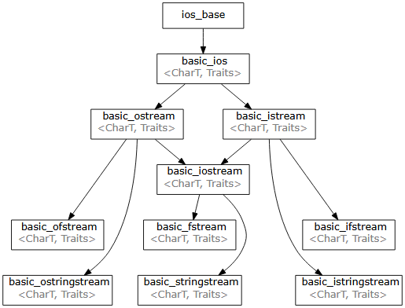
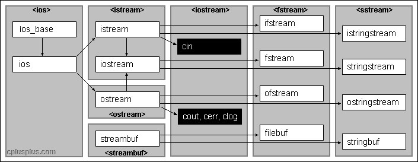

输入输出¶
约 1875 个字 175 行代码 2 张图片 预计阅读时间 8 分钟
- cin 标准输入流
- cout 标准输出流
- cerr 标准错误流
- clog 标准日志流/带缓冲的错误流
Note
1> 重定向stdout,
2>重定向stderr,
>换成>>: 覆写文件换成在文件尾部追加
继承关系¶
[下图]给出了输入输出流的模板类的继承关系, CharT可以适配各种基本字符类型

对于最常用的基本字符类型(char, wchar_t), C++也提供了单独的typedef, 最常用的char字符类型的输入输出库如下图
下图所示.

注意派生类具有基类的性质, 所以ofstream会具有ostream的所有性质, 在介绍时不赘述.
ostream¶
ostream是一个类, cout是预定义的ostream类的对象 cerr和clog也是ostream类的对象, cerr无缓冲区(实际有, 但只是每次都flush()), clog有缓冲区
注意clog和cerr都与C语言的stderr相关联, 很多时候它们会绑定到相同streambuf(同一个stderr缓冲区), 只是cerr默认每次都调用.flush(), 而clog并不会每次都flush(). 不过标准并不保证它们共享缓冲区, 若需要clog立刻输出, 应直接换成cerr或手动调用clog.flush().
fmtflags¶
C++用bitmask表示各种格式控制开关, 而整体的掩码可以通过os.flags()获得.std::ios::fmtflags是一个bitmask类型, ios被包含在iostream里. fmtflags包含不同功能的几个字段, 可以通过cout.setf直接设置某个字段的bitmask, 比如可以通过:
-
std::cout.setf(std::ios::hex, std::ios::basefield);把进制字段basefield 清空，再置表示16进制的比特位. -
std::cout.setf(std::ios::hex);按位或上表示16进制的比特位(没有把其它位置零, 可能冲突).
但一般不会直接操纵bitmask, 而是通过对应的操纵子(manipulator)实现, 例如上述设置hex的操作等价于 cout << hex. 这里是<<被重载, 使得其接受下一个操作数hex为函数指针, 再调用hex函数, 而hex函数就包装了setf(std::ios::hex, std::ios::basefield).
常用的fmtflag操纵子¶
-
数字进制
std::decstd::decstd::oct
-
浮点格式
std::fixedstd::scientificstd::hexfloat
-
对齐方式
std::left// 左对齐std::right// 右对齐（默认）std::internal// 符号在左，数字右对齐（常配合宽度和填充）
-
其它
| flag | 操纵子 | 作用 |
|---|---|---|
showbase |
std::showbase |
显示进制前缀：0x、0 等 |
showpos |
std::showpos |
正数前加 + |
showpoint |
std::showpoint |
浮点数即使是整数也显示小数点与尾零 |
uppercase |
std::uppercase |
E、X 等字母大写 |
boolalpha |
std::boolalpha |
bool 以 true/false 输出而不是 1/0 |
noboolalpha |
std::noboolalpha |
bool 以 1/0 输出 |
skipws |
std::skipws |
输入时跳过前导空白（默认开） |
std::noskipws |
输入时不跳过空白 | |
unitbuf |
std::unitbuf |
每次输出都立即 flush |
iomanip¶
iomanip库存储带参数的格式操纵子和一些高级格式调整的工具. 需要#include <iomanip>
-
设定宽度: 注意:不同于其它manipulator,
setw只影响下一次<< -
设定小数精度:
-
设定定点小数位数(与
fmtflags的std::fixed连用) -
设置前导零
-
设置进制(对
fmtflags的封装), 只支持8,10,16 -
包装fmtflags
改输出格式后恢复¶
- 对于fmtflags, 可以使用
std::ios::fmtflags flags = os.flags()保存状态;
若使用了不在fmtflags范围内的格式控制选项(如下所示), 还应:
-
使用
std::streamsize prec = os.precision()保存输出精度状态, 再使用os.precision(prec);恢复; -
使用
char fill_char = os.fill()保存填充字符状态, 再使用os.fill(fill_char)恢复; -
注意:
setw也不在fmtflags范围之内但其只影响下一次<<;
使用guard class来封装一个不影响整体的输出函数¶
struct ios_guard {
std::ios& os;
std::ios::fmtflags flags;
std::streamsize prec;
char fill_char;
explicit ios_guard(std::ios& os_)
: os(os_), flags(os_.flags()),
prec(os_.precision()), fill_char(os_.fill()) {}
~ios_guard() {
os.flags(flags);
os.precision(prec);
os.fill(fill_char);
}
};
void myPrint(std::ostream& os, double x) {
ios_guard _{os}; // 作用域内临时改格式
os << std::showpos
<< std::hexfloat
<< std::setprecision(5)
<< std::setfill('0')
<< x;
} // 离开作用域自动恢复 flags/precision/fill
无格式输出¶
需要按严格字节输出, 或者需要高性能地写大块缓冲区, 且不需要格式控制时使用.
-
cout.put(char ch)输出一个字符, 忽略所有格式(即使之前设置过), 不会自动flush缓冲区(有缓冲)cout.put(65);输出字母A. -
cout.write(const char* s, std::streamsize n)从地址s开始, 输出n个字符(不会遇到\0而停止), 无自动flush.
输出重定向¶
1 > file重定向标准输出,2 > file重定向标准错误
istream¶
同样的, cin是istream类的预定义的对象.
整行输入 cin.getline()或string::getline()¶
- 作为
char[]输入:cin.getline(char* , streamsize )参数为C风格字符数组和最大输入长度 也可以读入直到指定分隔符cin.getline(char*, streamsize, delemeter) - 作为
string类输入 (需#include<string>):- 读入包含空格的一整行:
getline(cin, line_var) - 读入直到指定分隔符：
getline(cin, line_var, delimeter)
- 读入包含空格的一整行:
按字符输入 cin.get()¶
-
输入一行按空格分隔的数字
cin >> str会默认跳过开始的空格, 并以空格或换行作为输入结尾（空格或换行仍保留在输入流中!）; -
输入直到换行或指定分隔符的另一种方法
cin错误处理¶
cin作为istream类的预定义对象, 其成员函数也将适用于istream的派生类, 例如后文的ifstream, fstream, istringstream, stringstream.
cin.rdstate()¶
ios::iostate rdstate()是输入输出流的一组状态位, 其包含以下标志位:
ios::goodbit // 0，表示目前没有错误
ios::eofbit // 读到 EOF（文件/输入结束）
ios::failbit // 格式错误，或操作失败（但流本身没坏）
ios::badbit // 输入流错误（比如底层设备损坏）
cin.rdstate() == ios::goodbit 为true
注意: goodbit值为0
- 出错: 若多种错误同时发生, rdstate等于多种错误标志位的按位或
若手动判断, 可以如下进行:
auto state = cin.rdstate();
if (state & ios::eofbit) { /* 到 EOF 了 */ }
if (state & ios::failbit) { /* 输入格式错误 or 读取失败 */ }
if (state & ios::badbit) { /* 输入流损坏(输入设备坏了)*/ }
判断函数good()/fail()/bad()/eof()¶
good()/fail()/bad()/eof()是对rdstate()判断的封装:
cin.good() // 等价于 rdstate() == goodbit
cin.eof() // rdstate() & eofbit
cin.fail() // rdstate() & (failbit | badbit)
// 注意：fail() 包含 badbit
cin.bad() // rdstate() & badbit
failbit主要出现在输入格式不匹配的情况.
常见用法是:
-
通过流对象的
operator bool()重载, 流对象在条件判断里返回!fail() -
通过流对象的
operator !()重载,!之后的流对象会返回fail()
while (cin >> x)为什么不等于while ((cin >> x).good()?)
while ((cin >> x).good()会读不到”恰好在文件结尾的那个字符”
例如文件内容”1 2 3”(无多余空格)
在第三次循环时会读到3, 此时eofbit被设置, cin.good()为false, cin.fail()为false. 若采用while ((cin >> x).good(), 第三次循环将不执行循环体直接结束, 而采用while (cin >> x)则将执行函数体, 并在第四次循环时因为读取不到任何字符而设置failbit, cin.fail()为true, 退出.
错误处理并输出导致错误的输入¶
- 使用
cin.clear()恢复状态; - 需要读入引起错误的输入, 否则会堵塞;
stringstream¶
#include <sstream>
stringstream继承于iostream, 支持cout和cin的绝大多数用法, 只是不再绑定终端+缓冲区(比如在stringstream中插入endl, 只是插入一个换行, 因为没有刷新缓冲区的概念)
应用场景: 1. 不是通过设备输入输出, 而是通过字符串, 比如通过网络发送/接收string类的消息体并解析, 这种消息体可能包含很复杂的格式.
- 为了避免各种类型与string的类型转换, 输出流自带把所有东西当成字符串处理的功能.
stringstream基础用法¶
#include <sstream>
#include <iostream>
#include <string>
using namespace std;
int main(){
stringstream ss;
ss << "test stringstream" << hex<<100<<boolalpha << true; //同cout语法
string str1, str2;
ss >> str1 >> str2 ; //同cin语法
cout << str1 << str2; //输出test stringstream
string str3 = "123\n456\n789";
stringstream ss3(str3);
string line;
for(;;){
getline(ss3, line);
cout << line<<endl;
if(ss.eof()) break;
}
}
-
输出stringstream的内容:
cout << ss.str() << endl -
清空stringstream:
ss.str("")将空字符串传给stringstream (注意, 同cin一样,ss.clear()是清空错误状态, 不是清空内容)
istringstream, ostringstream¶
istringstream 可以作为输入流； ostringstream 可以作为输出流；
输入空格分隔的一行多整数
string line = "10 20 30"
istringstream iss(line);
int x;
vector<int> a;
while(iss>>x) a.push_back(x);
输入指定分隔符的元素
string s = "1.2.3.4"
istringstream iss(s);
string part;
while(getline(iss,part,'.')){
//part可能为空，例如"1..3"会得到一个空part
}
自定义输入函数
vector<int> parseInput(string& s){
istringstream iss(s);
vector<int> nums;
string part;
while(getline(iss,part,'.')){
nums.push_back(stoi(part));
}
return nums;
}
int main(){
string s;
getline(cin,s);
vector<int> nums;
nums=parseInput(s);
}
实现类似sprintf的输出到字符串
double x = 3.14159; int n = 7;
ostringstream oss;
oss << "x=" << fixed << setprecision(2) << x
<< ", n=" << setw(3) << setfill('0') << n; // 001
string out = oss.str(); // "x=3.14, n=007"
fstream¶
include<fstream>
类型:fstream, ifstream, ofstream
- 基础用法:
- 打开文件
fstream fs("text.txt")或者fs.open("test.txt") - 关闭文件
fs.close(). 当文件流对象析构时也会自动close, 但需注意有的系统有文件句柄的总数限制, 所以不使用文件时应主动关闭fs. close也会自动flush缓冲区. - 文件是否打开
fs.is_open() - 打开模式
打开模式是bitmask, 所以按位或
std::ios::in // 以输入（读）方式打开 std::ios::out // 以输出（写）方式打开 std::ios::app // 追加写，每次写都在末尾 std::ios::trunc // 打开时截断文件为长度 0（清空）, 在ios::out或者ostream时默认启用, 有ios::in或者istream时不生效. std::ios::binary // 二进制模式 std::ios::ate // 打开后定位到文件末尾（但仍可在任意位置读写）fs.open("test.txt", std::ios::binary|std::ios::app)
- 打开文件
若使用fstream, 则必须在第二个参数位(打开模式)指明读/写/读写; 若为ofstream或者ifstream则不用.
文件写入¶
-
可以使用
fstream或ofstream -
ios::binary, 在Windows平台和Linux平台默认对\r\n的处理不同, 可能存在默认的转换. 而ios::binary不对此进行处理或转换. 尤其是对于图像视频等二进制文件, 应使用ios::binary防止写入时文件损坏. -
fstream(ios::out)和ostream写文件是默认清空源文件开始写! (默认设置std::ios::trunc). 若不希望清空源文件, 使用ios::app. -
ios::app: 每次写入时都从结尾开始写入, 文件不存在会被创建
//以写入模式打开文件
fstream wfs(testfile, ios::out|ios::binary|ios::app);
//或者: fstream wfs; wfs.open(testfile, ios::out|ios::binary);
wfs<<"1234567890\n";
wfs.write("987654321", 9);
文件读取¶
-
ios::ate在打开时移到文件末尾(但并非每次读写自动都在末尾, 与ios::app不同) -
处理打开失败
-
输出读到的字符数
-
获取文件大小:
-
实时读取文件的新增内容
#include<string>
#include<iostream>
#include<fstream>
using namespace std;
int main(){
string testfile = "test.txt";
ifstream ifs(testfile, ios::ate|ios::binary);
string line;
for(;;){
getline(ifs,line);//由于已经在结尾, getline会失败(ifs.fail()为true)
if(!line.empty()){//或者!ifs.fail()
cout<<"newLine: "<<line <<endl;
}
ifs.clear();//恢复ifs的rdstate, 否则会一直处于fail状态
}
}
streambuf¶
std::streambuf是缓冲区的底层类,与具体设备进行交互,管理缓冲区. 其内部维护读写指针, 并实现了一组虚函数如overflow(), underflow等用来在缓冲区写满/读完时触发对设备的操作.
std::streambuf作为基类, 而对于不同的读写设备(文件/字符串)有不同的派生类. 当需要对其它类型的输入输出设备进行操作时(例如直接输出到socket), 也可以自己实现一个继承streambuf的类.
我们可以通过改变std::istream / std::ostream / std::iostream等类内部的stream_buf来实现重定向.
实现一个可切换输出设备(终端/文件)的static输出流¶
std::ios::rdbuf()¶
无参数时, 返回流的缓冲区指针
//返回当前cout绑定的streambuf(默认stdout)
std::streambuf* consoleBuf = std::cout.rdbuf()
//返回文件输出流绑定的streambuf
std::ofstream ofs("out.txt", ios::binary|ios::app);
std::streambuf* fileBuf = std::cout.rdbuf();
以缓冲区指针作参数时, 替换某个流的缓冲区, 并清除rdstate的错误状态.
注意, std::ios::set_rdbuf()也是替换streambuf指针, 但它不会清除错误状态(rdstate). 同时它是protected, 所以只能在ios的派生类的成员函数里被调用.
具体实现¶
-
log.h
-
log.cpp
// log.cpp #include "log.h" #include <iostream> #include <fstream> namespace { // 真正打开文件的流，内部用 std::ofstream log_file; // 记住标准输出的 buffer，方便切回终端 std::streambuf* console_buf = nullptr; } // 注意：先不绑定任何 buffer，避免静态初始化顺序问题 std::ostream log_stream(nullptr); void set_log_to_console() { // 第一次调用时，把 cout 的 buffer 记下来 if (!console_buf) { console_buf = std::cout.rdbuf(); } // 让 log_stream 使用终端的 buffer log_stream.rdbuf(console_buf); } bool set_log_to_file(const std::string& filename) { // 先关掉之前打开的文件（如果有） if (log_file.is_open()) { log_file.close(); } log_file.clear(); // 清理错误状态 // 以追加方式打开文件 log_file.open(filename, std::ios::out | std::ios::app); if (!log_file.is_open()) { // 打开失败就返回 false，不修改当前 log_stream 的目标 return false; } // 让 log_stream 使用文件的 buffer log_stream.rdbuf(log_file.rdbuf()); return true; } -
main.cpp
// main.cpp #include "log.h" #include <iostream> int main() { // 程序开始时先选择一个默认输出目标 set_log_to_console(); log_stream << "程序启动...\n"; // 某个地方根据配置/参数切换到文件 if (set_log_to_file("app.log")) { log_stream << "现在开始把日志写到 app.log\n"; } else { log_stream << "无法打开 app.log，继续输出到终端\n"; } for (int i = 0; i < 3; ++i) { log_stream << "一条日志：" << i << '\n'; } // 随时可以再切回终端 set_log_to_console(); log_stream << "结束，回到终端输出\n"; return 0; }
注意:
-
log.cpp中定义log_stream时直接写
std::ostream log_stream(cout.rdbuf())可能有静态初始化顺序问题(详见面向对象-类成员变量的初始化). 静态初始化顺序问题是指不同编译单元间的静态初始化顺序是不明确的.当存在跨编译单元的依赖(
extern)时, 就有可能出现用还没初始化的全局对象去初始化另一个全局对象.本例子中,
std::cout这一对象是在iostream所引入的另外的编译单元中初始化的, 而log_stream是在log.cpp中初始化的. 两者的初始化在不同编译单元, 应避免顺序依赖. 所以写std::ostream log_stream(nullptr). -
log.cpp中的匿名命名空间
namespace {...}作用在此处等同于static, 即限制全局变量仅该编译单元可见. 只是使用匿名命名空间可以对变量/函数/结构体/类/枚举类/using等使用, 且可以直接作用于一大段代码, 而static只能用于变量和函数且需要挨个标注.